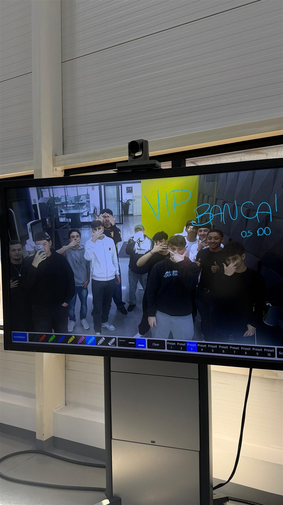
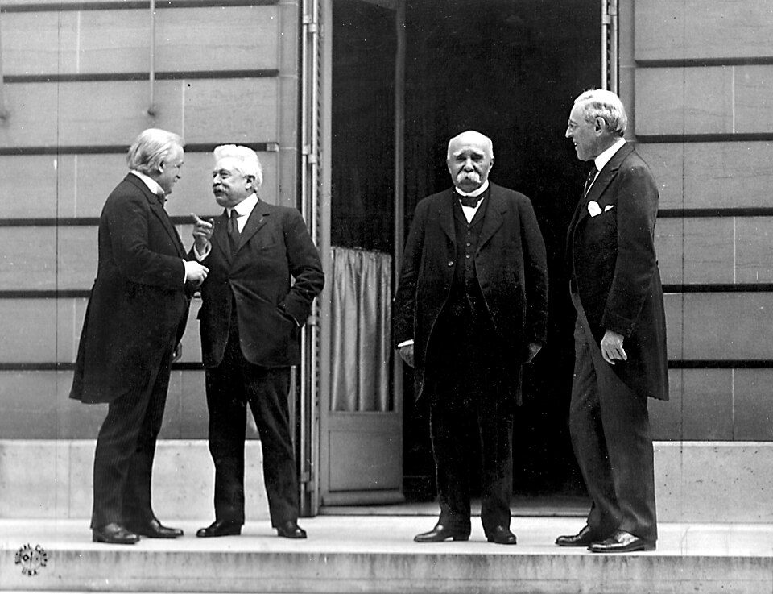

Visita técnica à Sandvik
Jundiaí, 17/09/2026. Visita a uma indústria de ferramentas para usinagem, para conhecer de perto processos de produção e automação.
Registro visual
Eventos, visitas e trabalhos em equipe que marcaram o 3º ano.
Jundiaí, 17/09/2026. Visita a uma indústria de ferramentas para usinagem, para conhecer de perto processos de produção e automação.

A turma reunida na sala de videoconferência da escola.

Maquete com iluminação de LEDs apresentada pelo grupo.

A turma recriou as negociações de paz de 1919, representando as delegações dos países.

Trabalho integrado entre Linguagens e Ciências da Natureza, com memorial descritivo.
Privacidade: só publico fotos minhas ou de colegas que autorizaram. As imagens marcadas como ilustrativas têm licença livre e estão na página Créditos das imagens.